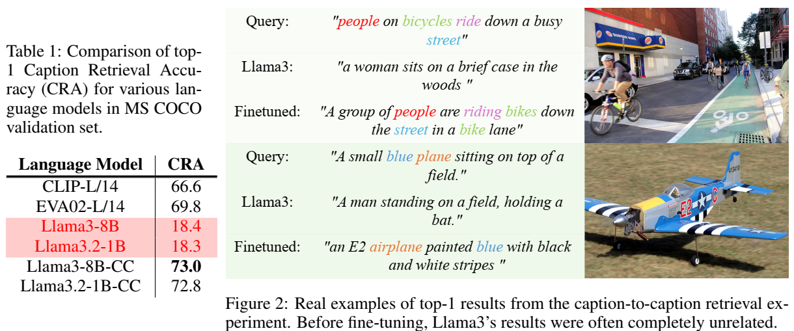
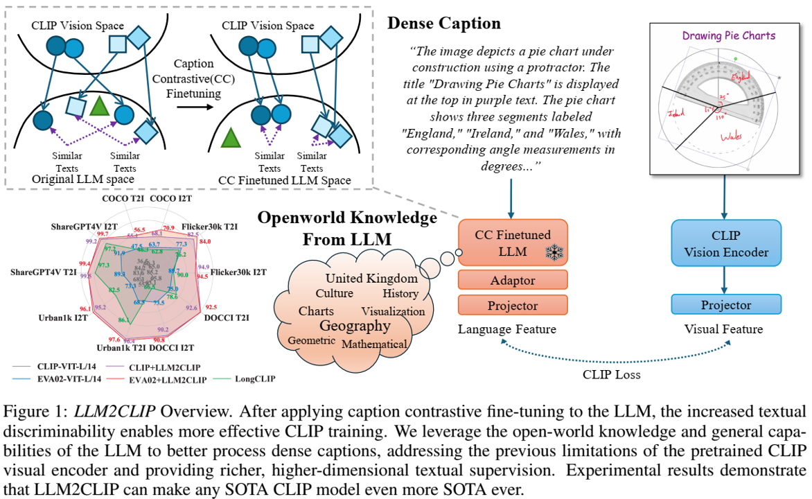

论文阅读十二：LLM2CLIP：强大的语言模型解锁更丰富的视觉表现
摘要
CLIP是当今最重要的多模态基础模型之一，它在大规模图像文本对上使用简单的对比学习损失，将视觉和文本信号对齐到一个共享的特征空间。是什么驱动了CLIP的能力？自然语言（人类知识的载体）提供的丰富的监督信号形成一个强大的跨模态表示空间。结果是，CLIP支持各种任务，包括零样本分类、检测、分割和跨模态检索，显著影响了整个多模态领域。然而，随着大型语言模型（LLMs），如GPT-4和LLaMa的快速发展，语言理解和生成的界限不断被突破。这就提出了一个有趣的问题：可以利用LLM的能力来进一步改进多模态表示学习吗？将LLM纳入CLIP的潜在好处是显而易见的。LLM强大的文本理解能力可以从根本上提高CLIP处理图像字幕的能力，大大增强其处理长而复杂文本的能力——这是一般CLIP的一个众所周知的局限性。而且，此外，LLMs是在庞大的文本语料库上训练的，拥有开放世界的知识。这允许他们在训练期间扩展字幕信息，提高学习过程的效率。然而，实现这一潜力是具有挑战性的。尽管LLM具有强大的内部理解能力，但它们的自回归特性在模型中隐藏了这种能力，导致输出特征的可区分性较差。我们的实验表明，将LLM直接集成到CLIP中会导致灾难性的性能下降。在这篇论文中，我们提出了LLM2CLIP，这是一种新的方法，它利用LLM的力量来释放CLIP的潜力。通过对比学习对字幕空间中的LLM进行微调，我们将其文本能力提取到输出嵌入中，显著提高了输出层的文本可辨性。然后，我们设计了一个高效的训练过程，其中微调的LLM充当CLIP视觉编码器的强大教师。由于LLM的存在，我们现在可以合并更长、更复杂的字幕，而不受一般CLIP文本编码器的上下文窗口和能力限制的限制。我们的实验表明，这种方法在跨模态任务中带来了实质性的改进。我们的方法直接将之前的SOTA EVA02模型在长文本和短文本检索任务上的性能提高了16.5%，将仅基于英语数据训练的CLIP模型转化为最先进的跨语言模型。此外，当与Llava 1.5等模型集成到多模态训练中时，它在几乎所有基准测试中都表现优于CLIP，显示出全面的性能改进。论文地址
引言
CLIP（Radford等人，2021）是当今最重要的多模态基础模型之一。它通过在大规模图像文本对上采用简单的对比学习损失，将视觉和语言信号对齐到一个共享的特征空间中。作为检索器，CLIP支持广泛的任务，包括零样本分类（Qian&Hu，2024）、检测（Lin&Gong，2023）、分割（Zhou et al.，2023。作为一种特征提取器，它在几乎所有跨模态表示任务中都占据主导地位，如图像理解、视频理解和文本到图像/视频生成。例如，LLaVA（Liu等人，2023）和Qwen VL（Bai等人，2023年）等研究利用CLIP作为特征提取器来获取文本模型的视觉特征，而Stable Diffusion（Rombach等人，2021）和DALL·E 2（Ramesh等人，2022）等模型则使用CLIP的文本编码器来提取视觉模型的文本特征。
是什么让CLIP如此强大，尤其是作为视觉编码器？其优势的核心在于其前所未有的将视觉预训练与自然语言（人类知识的载体）相结合的能力。与早期视觉编码器不同，像VGG和ResNet这样的编码器依赖于有限的ImageNet数据集和只有几个单词的简单图像类别，CLIP使用丰富的描述性文本在网络规模的数据上进行训练。这种与语言的一致性使CLIP与众不同，并释放了其巨大的潜力。然而，自从CLIP引入以来，大型语言模型（LLM）已经取得了显著的进步。GPT-4（Achiam等人，2023）和Llama（Dubey等人，2024）等模型现在表现出了非凡的语言能力，但这些进步并没有转化为视觉表征学习的相应改进。这就引出了一个问题：可以利用LLM的能力来进一步改善多模态表示学习吗？
将LLMs纳入CLIP的潜在好处是显而易见的。LLMs强大的文本理解能力可以从根本上提高CLIP处理图像字幕的能力，大大增强其处理长而复杂文本的能力——这是一般CLIP的一个众所周知的局限性。此外，LLMs是在庞大的文本语料库上训练的，拥有开放世界的知识。这使他们能够在训练过程中扩展字幕信息，提高学习过程的效率。
在这项工作中，我们的目标是利用大型语言模型（LLM）使CLIP能够学习更强大、更细粒度和更丰富的视觉表示。目前，CLIP经常因其词袋般的感知及其文本编码器的局限性而受到批评，该编码器受到模型大小和上下文长度的限制，主要基于图像字幕数据进行训练，缺乏对不同世界语料库的接触。一种自然的方法是用嵌入丰富人类知识的LLM替换CLIP的文本编码器。然而，这带来了重大挑战。在CLIP采用的跨模态对比学习框架中，文本编码器在共享的潜在空间中充当一组知识锚，引导视觉编码器与人类对物理世界的知识对齐。这些知识锚的结构、丰富性和可辨别性对视觉模型的有效性至关重要。相比之下，LLM的主要目的是预测下一个单词，而不是生成它们所包含知识的显式表示。他们的文本理解能力和开放世界知识在模型中是潜在的，而不是存在于输出嵌入中，这使得他们很难像CLIP的文本编码器那样明确地使用。因此，使用LLM作为文本编码器可能不会产生线性可分离的特征，而这些特征对于有效的特征对齐至关重要。
为了验证我们的假设，我们设计了一个字幕到字幕检索实验，如表1和图2所示。MS-COCO数据集中的每张图像都有五个人类注释的标题。我们选择前两个标题作为阳性样本，并在整个验证集中进行检索。使用字幕检索准确性（CRA），我们评估了文本模型区分字幕的能力，帮助我们确定哪种语言模型更适合CLIP。我们发现Llama-3 8B的top-1准确率仅为18.4%，而标准CLIP-ViT-L的top-1准确性为66.0%。如图2所示，原始Llama-3检索到的前1个标题可能与查询标题完全无关，这显然阻碍了有效的CLIP学习。因此，直接使用LLM来指导CLIP的视觉编码器训练受到高度限制。

我们认为，通过微调增强LLM输出标记的辨别力对于我们提出的方法的成功至关重要，从而使LLM的潜在能力得以显现。令人鼓舞的是，我们发现这可以非常有效地实现。具体来说，我们设计了一种字幕收缩（CC）微调策略，在CC3M（Sharma等人，2018）图像字幕数据集上使用LoRA对Llama-3 8B的输出标记进行轻量级微调。该训练任务的主要目标是调整输出空间，提高模型区分不同字幕的能力。我们使用了监督SimCSE（Gao等人，2021；BehnamGhader等人，2024）对比学习损失，其中ShareCaptioner（Chen等人，2023）生成的原始字幕和重新注释的字幕被视为正对，使它们更接近。相比之下，所有其他标题形成了一个负面样本集，模型学会了将其推开。值得注意的是，经过CC微调后，如表1所示，字幕检索准确率从18.4%上升到73%，比原始CLIP-ViT-L文本编码器提高了7%。这一成功的微调过程使我们能够更有效地利用LLM的开放世界能力进行CLIP训练。
简而言之，我们提出了LLM2CLIP，这是一种通过集成大型语言模型（LLM）来增强视觉表示学习的新方法，如图1所示。这种方法采取了一个简单而大胆的步骤，替换了原始的CLIP文本编码器，并用LLM中嵌入的大量知识增强了CLIP视觉编码器。我们已经确定了与这一创新理念相关的关键障碍，并提出了一项具有成本效益的微调策略来克服这些障碍。我们的实验表明，利用LLM作为CLIP训练的教师可以带来实质性的改进，LLM2CLIP的表现明显优于最先进的预训练CLIP模型。我们的方法将之前的SOTA EVA02模型在长文本和短文本检索任务上的性能提高了16.5%，将仅基于英语数据训练的CLIP模型转化为最先进的跨语言模型。此外，当被纳入多模态模型训练时，例如Llava 1.5，它在几乎所有基准测试中都比EVA02实现了全面的改进。此外，LLM2CLIP提出的高效训练方法确保了训练成本与微调原始CLIP几乎相同。我们还证明，使用更强大的语言模型和更大的训练数据集可以进一步提高LLM2CLIP的性能，展示了我们方法的巨大潜力。这些有希望的结果证实，我们已经成功地将CLIP转变为一个更通用的基础模型。增强的LLM2CLIP模型具有更丰富的知识，并在区分细粒度和复杂的长文本语义方面表现出显著的能力。这一进步不仅拓宽了支持的下游任务的范围，而且推动了整个视觉领域的进步。
LLM2CLIP概述。在将字幕对比微调应用于LLM后，增加的文本可辨性使CLIP训练更有效。我们利用LLM的开放世界知识和一般能力来更好地处理密集的字幕，解决了预训练CLIP视觉编码器的先前局限性，并提供了更丰富、更高维度的文本监督。实验结果表明，LLM2CLIP可以使任何SOTA CLIP模型变得更加SOTA。

相关工作
对比语言图像预训练（CLIP）。CLIP（Radford等人，2021）是当今最重要的多模态模型之一。通过在网络规模的数据上进行训练，图像标题可以作为丰富、细粒度的监督信号，用于学习与图像紧密对齐的表示，使CLIP摆脱手动定义标签的限制。字幕的丰富性赋予了CLIP许多非凡的能力；除了零样本图像文本检索外，CLIP特征甚至可以实现区域级对应，支持零样本检测和分割任务。此外，CLIP是当前图像和视频理解任务中使用最广泛的编码器。在Tong等人（2024）的分析中，它在MLLM训练中的各种视觉编码器中脱颖而出，成为最重要的模型，展示了其强大的能力。对于生成任务，CLIP同样是基础。其文本和图像编码器用于为条件生成模型提供文本控制（Rombach等人，2021；Ramesh等人，2022）和图像控制信号（Blattmann等人，2023；Zhang等人，2023）。此外，CLIP评分（Hessel等人，2021）已成为评估所生成图像到文本相关性的关键指标。虽然最初的CLIP只使用图像和文本模式，但CLIP已经进行了大规模的扩展，以纳入各种其他模式（Dai等人，2024；He等人，2023；Moon等人，2022；Zhang等人，2023）。CLIP无疑对视觉领域和多模态产生了重大影响，而且其影响力仍在增长。
CLIP遇到更强大的语言模型。 一些工作已经探索将LLMs集成到CLIP。